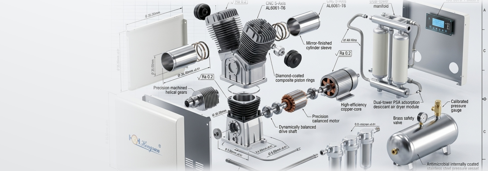
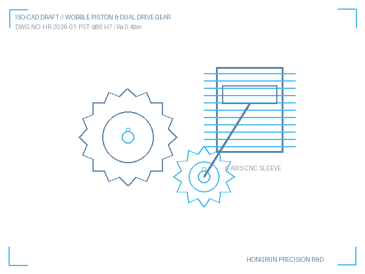
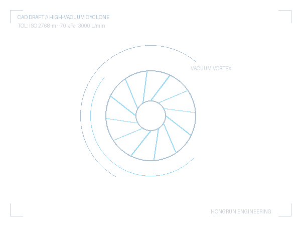
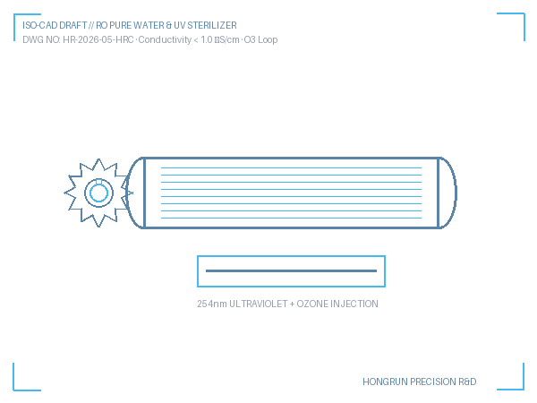
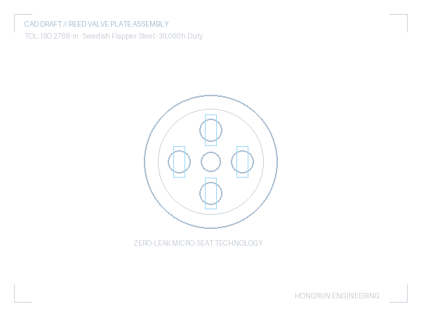

Executive Engineering Summary
Medical air purity in hospital operating theaters and dental operatories cannot tolerate even trace hydrocarbons. This engineering whitepaper dissects the Hongrun 100% Oil-Free Compressor Platform through proprietary 3D CAD exploded models. We explore how diamond-coated self-lubricating PTFE composite piston rings, 5-axis CNC dynamically balanced crankshafts, integrated dual-tower PSA desiccant dryers (−40°C dew point), and 0.01μm multi-stage sterile filtration achieve genuine ISO 8573-1 Class 0 zero-oil purity with over 30,000 hours of maintenance-free continuous duty.
1. The Clinical Zero-Oil Mandate & ISO 8573-1 Class 0 Standards
In dental restorative procedures, oral surgeries, and hospital central medical gas pipeline systems (NFPA 99 & ISO 7396-1 compliance), compressed air comes into direct contact with open surgical wounds, sterile instruments, and respiratory air circuits. Standard oil-flooded or oil-injected compressors equipped with coalescing filters still suffer from "filter bypass" during pressure surges, allowing carcinogenic oil aerosols and toxic hydrocarbon vapors to contaminate patient airways and destroy composite resin bonding surfaces.
Hongrun's engineering philosophy fundamentally rejects lubricants within the compression chamber. Under ISO 8573-1 Class 0 testing by TÜV Rheinland and national medical metrology institutes, our compressor platform demonstrates:
- Total Hydrocarbon Content (Aerosol, Vapor, Liquid): < 0.003 mg/m³ (Well beyond the 0.01 mg/m³ Class 1 limit).
- Solid Particulate Classification: Class 1 (≤ 20,000 particles/m³ in 0.1–0.5 μm range).
- Pressure Dew Point (Moisture): Class 2 (≤ −40°C), preventing internal condensation and bacterial colonization.
Industrial Design Concept Sketches & Fluidic Path Ideation

1. Wobble Kinematics
2. PSA Manifold Flow
3. Acoustic Baffle
4. Thermal Fin ArrayHandcrafted R&D conceptual sketches developed by Hongrun industrial designers to optimize fluid dynamics and acoustic damping.
2. Key Mechanical Sub-Assemblies: 3D CAD Dissection
2.1. 5-Axis CNC Helical Gears & Dynamically Balanced Drive Shaft
Vibration and acoustic noise are primary challenges for clinic-side air systems. Hongrun drive shafts are precision-ground from high-alloy carbon structural steel on German 5-axis CNC machining centers to a surface finish tolerance of Ra ≤ 0.2 μm. Dual opposing eccentric counterweights undergo electronic dynamic balance balancing (ISO 1940 Grade G2.5 standard), reducing operating vibration to < 1.2 mm/s and acoustic emission down to ≤ 55 dB(A).
2.2. Diamond-Coated Composite Self-Lubricating PTFE Piston Rings
In place of standard carbon or low-grade teflon, Hongrun utilizes high-molecular-weight Saint-Gobain PTFE matrix composite rings embedded with nano-scale diamond ceramics and graphite lubricity agents. During initial run-in, a microscopic transfer film forms on the hard-anodized cylinder bore (Hardness ≥ 450 HV), resulting in near-zero friction coefficient (μ ≤ 0.04) and guaranteeing over 30,000 operating hours without cylinder scoring or seal degradation.
2.3. High-Efficiency Pure Copper-Core Motor with 135°C Thermal Protection
Each motor stator is precision-wound with 99.99% high-purity oxygen-free copper magnet wire (Class F insulation rated up to 155°C). An embedded bi-metallic thermostat automatically interrupts current at 135°C ± 5°C to protect against locked-rotor or low-voltage anomalies. The motor complies with National Grade-1 Energy Efficiency standards, consuming 28% less electrical power than conventional compressors over a 10-year lifecycle.
2.4. Integrated Dual-Tower PSA Desiccant Drying Module
To eliminate water droplets that foul dental handpieces and encourage bacterial growth in piping, the compressor integrates an automated twin-tower Pressure Swing Adsorption (PSA) dryer. Packed with high-capacity synthetic 13X molecular sieves and activated alumina, it achieves a stable pressure dew point of −40°C to −70°C with an ultra-low regeneration purge loss of only ≤ 3.5%.
2.5. 0.01μm Sub-Micron Multi-Stage Borosilicate Sterile Filter
The discharge line incorporates high-efficiency borosilicate micro-glass fiber coalescing and particulate filters. The multi-layer gradient pore structure achieves a 99.999% retention rate for particles ≥ 0.01 μm, effectively trapping airborne dust, rust residues, and bacterial aerosols before entering the air receiver.
2.6. Anti-Microbial Nano-Coated Vessel & Solid Brass Safety Valve
The internal vessel surface is electrostatically lined with a 120 μm food-grade thermosetting anti-corrosive epoxy layer infused with nano-silver anti-microbial ions. This completely prevents internal rusting and sludge buildup, ensuring that stored air maintains zero odor and 100% biological cleanliness. Overpressure safety is backed by an ASME/CE-certified solid brass automatic relief valve.
Hongrun 3D CAD Engineering Specifications vs. Standard Market Systems
| Engineering Parameter | Hongrun Class 0 Platform | Standard Dental Compressor |
|---|---|---|
| Oil Purity Certification | ISO 8573-1 Class 0 (Zero Trace) | Class 1 or Non-certified |
| Piston Ring Material | Diamond-Coated PTFE Composite | Standard Virgin PTFE |
| Design Operating Life | ≥ 30,000 Hours Standard | 8,000 – 12,000 Hours |
| Pressure Dew Point | ≤ −40°C (Integrated PSA) | +3°C to +10°C (Simple cooling) |
| Medical Qualification | NMPA Class II Medical License | Class I or Industrial only |
| Vessel Anti-Corrosion | Internal Nano-Silver Coating | Uncoated Raw Steel |
3. Engineering Application & Compressor Sizing Guide
When specifying central air sources for modern healthcare facilities, pneumatic engineers must calculate peak simultaneous usage factors (k-factors) and include safety redundancy:
- 1 to 3 Dental Chairs: HY-100 / HY-200 series (Displacement 150–200 L/min, 0.8 MPa, 50L tank). Explore HY Series →
- 4 to 10 Dental Chairs: Dual-redundant HYT-400 / HYT-500 series (Displacement 500–1350 L/min with dual independent pump heads). Explore HYT Series →
- Hospital Stomatology Wings & Central ICU Supply: HBG / HW Series Quiet Scroll Multi-Module Central Stations (Displacement up to 3,600 L/min with PLC IoT cloud monitoring). Explore Hospital Systems →
- Cleanroom Analytical Labs & LC-MS Instruments: HYG-IoT Series Clean Compressed Air Stations. Explore Clean Air Stations →
Hongrun R&D Engineering & Application Team
Specializing in custom OEM/ODM medical compressor engineering, hospital gas piping simulations, and international distributor project tenders.
Related Engineering Insights & Case Studies
Selection Reference for 15 Dental Chairs Operatory
Pneumatic piping design, simultaneous usage factor calculations, and vacuum suction pairing.
Quality ChronicleHongrun 30th Anniversary Quality Tour: Beijing Hospital Audits
Field air purity audits at Peking University Stomatology and CAS research laboratories.